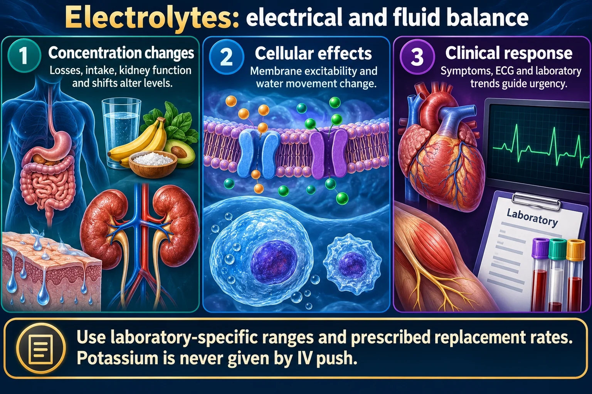

The one-page master cheat sheet — Na⁺ · K⁺ · Cl⁻ · Ca²⁺ · Mg²⁺ · PO₄³⁻
The MOST deadly conditions are typically the MOST tested conditions — the whole point of nursing school is to create safe nurses. This page puts all six electrolytes side by side: range, job, causes, signs, and the priority action. Two deep-dive pages back it up — NG-088 (potassium · sodium · chloride) and NG-134 (magnesium · calcium · phosphate).
📄 Simple Nursing original — opens in Drive →
Every range on this page is a typical adult reference range. Reference ranges differ between laboratories and between textbooks — always verify against the range printed on your own facility's lab report.
Also: a serum level tells you what is in the blood, not what is in the cells. A “normal” potassium in DKA can still mean a large total-body deficit.
Electrolytes are charged particles held in unequal piles on either side of every cell membrane. That inequality is the electricity.
Sodium, chloride and calcium live mostly OUTSIDE the cell. Potassium, magnesium and phosphate live mostly INSIDE. The Na⁺/K⁺-ATPase pump spends energy all day keeping it that way.

Use laboratory-specific ranges and prescribed replacement rates. Potassium is never given by IV push.
Concentration changes
Losses, intake, kidney function and shifts alter levels.
Cellular effects
Membrane excitability and water movement change.
Clinical response
Symptoms, ECG and laboratory trends guide urgency.
Sodium
Primarily reflects water balance; rapid changes can affect the brain.
Potassium
Important for cardiac and muscle electrical activity.
Calcium, magnesium, phosphate
Support neuromuscular, cardiac and metabolic functions.
The kidney is the final regulator of every electrolyte on this page. When it fails, the pattern is predictable:
| ⬆ GOES UP in renal failure | ⬇ GOES DOWN in renal failure |
|---|---|
| Potassium — cannot excrete it → the lethal one Phosphate — cannot excrete it Magnesium — cannot excrete it |
Calcium — pushed down by the high phosphate, and the failing kidney cannot activate vitamin D |
Never give a potassium-containing IV or a potassium-sparing diuretic to a client in renal failure without a very deliberate order and a current level.
Range · job · causes · signs · priority action. This is the page you photograph before the exam.
| Electrolyte | Typical adult range | Job | Causes of LOW | Causes of HIGH |
|---|---|---|---|---|
| 🧂 Sodium Na⁺ | 135–145 mEq/L | Swells the body with fluid · BP & blood volume · nerve conduction | Excess water intake · SIADH · vomiting & diarrhea · diuretics & diuresis · sweating in extreme heat | High-sodium diet · DKA · excess aldosterone · water loss (fever, rapid respirations, watery diarrhea) · no access to water / loss of thirst · diabetes insipidus |
| 💓 Potassium K⁺ PRIORITY | 3.5–5.0 mEq/L | Pumps the heart · skeletal & smooth muscle · nerve impulse | Diuretics (loop & thiazide) · vomiting, diarrhea, NG suction · poor intake · insulin · alkalosis · excess aldosterone | Renal failure · potassium-sparing diuretics · ACE inhibitors/ARBs · acidosis · massive cell injury (crush, burns, tumor lysis) · too-fast IV K⁺ |
| 🧪 Chloride Cl⁻ | 97–107 mEq/L | Copies sodium · fluid balance · acid–base · gastric acid | Vomiting & NG suction · loop diuretics · low sodium states → metabolic alkalosis | Dehydration · high-sodium states · excess normal saline → metabolic acidosis |
| 🦴 Calcium Ca²⁺ | 9.0–10.5 mg/dL | Mellows the muscles · Bones, Bloodletting (clotting), Beats | LOW PTH (thyroid/parathyroid surgery) · chronic kidney disease · vitamin D deficiency · pancreatitis · massive transfusion | HIGH PTH (hyperparathyroidism) · cancer / bone metastases · prolonged immobility · thiazide diuretics · excess vitamin D or calcium supplements |
| 🧘 Magnesium Mg²⁺ | 1.3–2.1 mEq/L | Mellows nerve & muscle · guards potassium · cardiac rhythm | Malnourishment · chronic alcohol use · diarrhea & GI losses · diuretics · poor absorption | Renal failure · magnesium-containing antacids & laxatives · IV magnesium therapy |
| 🧬 Phosphate PO₄³⁻ | 3.0–4.5 mg/dL | Bone & teeth · ATP energy · cell membranes · inverse to calcium | Malnutrition & refeeding syndrome · chronic alcohol use · phosphate-binding antacids · hyperparathyroidism | Renal failure / CKD · tumor lysis syndrome · hypoparathyroidism · excess phosphate intake |
Never correct a sodium abnormality rapidly. Too-fast correction of a low sodium risks osmotic demyelination; too-fast correction of a high sodium risks cerebral edema. Slow, ordered, monitored.
Both mean LOW calcium (and they also show up in low magnesium and high phosphate, because those push calcium down).
Low Ca also gives: tetany, diarrhea, a prolonged QT, laryngospasm, and the weak B's — weak Bones (fractures), weak Bloodletting (bleeding), weak Beats (dysrhythmias).
High Ca gives: stones, bones, groans & moans — kidney stones (renal calculi), bone pain, constipation, severe muscle weakness & lethargy, decreased DTR, shortened QT.
One priority action per abnormality. Learn the first move; the rest is documentation.
| Problem | Priority nursing action |
|---|---|
| 🚨 HYPERkalemia | Cardiac monitor first — this is a rhythm emergency. Hold all K⁺ sources (IV, supplements, salt substitutes, K-sparing diuretics). Expect the provider to order calcium gluconate to protect the heart, insulin with dextrose to shift K into the cell, and a binder or dialysis to remove it. Recheck the level. |
| 🚨 HYPOkalemia | Assess respirations and the rhythm. Replace K⁺ — never IV push, always diluted, always on a pump, never exceeding the ordered rate. Check urine output before giving potassium, and check the magnesium if the K⁺ will not come up. Oral K⁺ with food to reduce GI upset. |
| HYPERnatremia | Restore water slowly per order; monitor neuro status & LOC hourly; strict I&O and daily weights; oral care for the dry sticky mucous membranes; seizure precautions. |
| HYPOnatremia | Neuro checks & seizure precautions. Fluid restriction if it is dilutional (e.g. SIADH); hypertonic saline only per order, slowly, on a pump, with frequent levels. |
| HYPERcalcemia | Encourage fluids (isotonic IV fluids per order); mobilize the client; strain urine for stones; safety/fall precautions for weakness & lethargy; stop calcium supplements, vitamin D and thiazides per order. |
| HYPOcalcemia | Airway & seizure precautions — laryngospasm is the emergency. Keep calcium gluconate and emergency equipment nearby per policy; check Trousseau's/Chvostek's; also check the magnesium and phosphate. |
| 🚨 HYPERmagnesemia | Check deep tendon reflexes and the respiratory rate — loss of DTR is the early warning. Stop all magnesium (including antacids & laxatives). Calcium gluconate is the antidote per order; dialysis if renal failure. |
| HYPOmagnesemia | Cardiac monitor — watch for torsades. IV magnesium per order on a pump; check DTRs during infusion (a falling reflex means you are going too high); check the potassium and calcium too. |
| HYPERphosphatemia | Phosphate binders WITH meals — that timing is the tested detail. Low-phosphate diet; watch for the low-calcium signs that come with it. |
| HYPOphosphatemia | Treat the cause; watch respiratory muscle strength and mental status; go slowly when refeeding a malnourished client — refeeding syndrome drops phosphate fast. |
These newly drawn concept diagrams consolidate the retired illustration sets. The accompanying study notes and original handout links remain on this page.